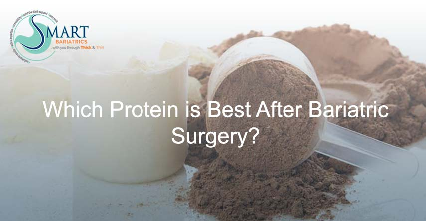

Why Protein is Vital After Bariatric Surgery: Essential Nutrients for Recovery and Health
Why Protein is Vital After Bariatric Surgery
When I counsel my patients that after surgery protein is the most important nutrient for them and they must include it and try to eat it first in every meal, they ask me why protein is so vital after bariatric surgery and are some proteins better than others? So here are my answers to these!!Increased Protein Demand Post-Surgery
Surgery reduces meal portion size, though at the same time increases the demand for protein:-
_x0001_
- For healing, _x0001_
- To support rapid weight loss, _x0001_
- For good glycaemic control, and _x0001_
- to prevent lean body mass.